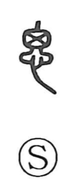

思

Uncategorized
Kun: omou | On: shi
to think ・ thought
Explanation
In the oldest forms, the top of the character is 囟, the fontanelle of an infant’s skull—the place that houses the brain. Paired with 心, the heart-mind, the graph depicts thinking as an activity arising where mind and heart meet. In later script the top was regularized to the square form 田, but the underlying image remained: thought taking shape within the heart-mind.